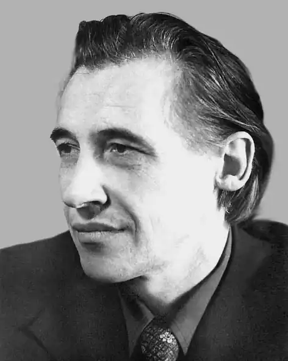

Дяченко Кость Іванович народився 20 січня 1928 р. в с. Драбівка Корсунь-Шевченківського району Черкаської області в сім'ї вчителя.
За спогадами вчительки-пенсіонерки Драбівської середньої школи Яценко Юлії Андріївни — сім'я Дяченків була приїжджа, свого будинку не мала, жили при школі. Батько Костянтина Івановича — Іван Семенович працював в Драбівській школі в 30-х роках. У сім'ї були старші дочки: старша — Марія, молодша — Тетяна.
У 1937 році сім'я Дяченків переїхала в Нетеребку, де майбутній письменник пішов у школу. Батько поета довго хворів ревматизмом і через декілька років помер, незабаром померла і мати. Старша сестра Марія закінчила Корсунське медичне училище, працювала в м. Корсунь-Шевченківський в РАЙВНО, в РК КПУ, потім переїхала в м. Черкаси. В 1944 році Костянтин Іванович — учасник Другої світової війни. В 1944 році він був бійцем і командиром винищувального загону по ліквідації залишків ворога після Корсунь-Шевченківського угрупування. По закінченні школи працював на залізниці черговим по станції, поїздовим диспетчером, начальником транспортного цеху цукрокомбінату. Навчався поет у Всесоюзному заочному інституті інженерів залізничного транспорту. Працював у рідній районній газеті та газеті "Вечірній Київ". Член Спілки Письменників СРСР з 1976 р. Костянтин Дяченко автор книжок гумору та сатири: "Хоч і верша — аби перша" (1964), "Історія з географією" (1970), "Комарасія" (1972), "Цвіт і цвіль" (1973), "Кругле диво" (1974), "Вето на холодець" (1980), "Невчасний візит" (1982), роману "Колія" (1990), "Веселе коло" (для дітей).